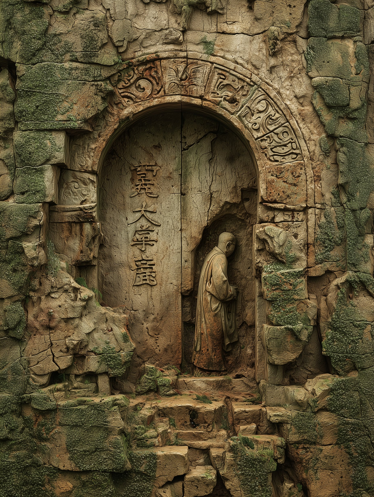
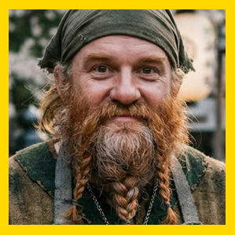

Los 6 Koonies — Elenco de Protagonistas
16
Sesiones Jugadas
6
Héroes Koonies
2.600
Platas en Tesoro
5
Mapas y Planos

Último Capítulo Jugado
24/08/2026 • Iryn 22-24
Sesión XVI — La Hija del Molinero y el Enano que Recordaba
El camino de vuelta de Kanatsu-mi trajo al grupo de regreso a Milborne. La mancha negra de Glunt ha remitido y el Viejo Oso ha revelado los secretos de una ciudadela enana perdida que resuena con la fe de Kazrim.
Milborne & Thurmaster
RELIQUIAS Y MISTERIOS DESTACADOS

La Ciudadela Enana de Kaz
Forja ancestral y escrituras coincidentes con los templos kunitas.

El Enigma del Ojo de J'karaa
Entregado a Sakura tras la advertencia del mago Tauster.